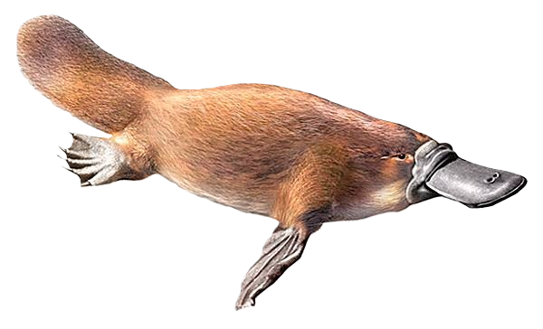
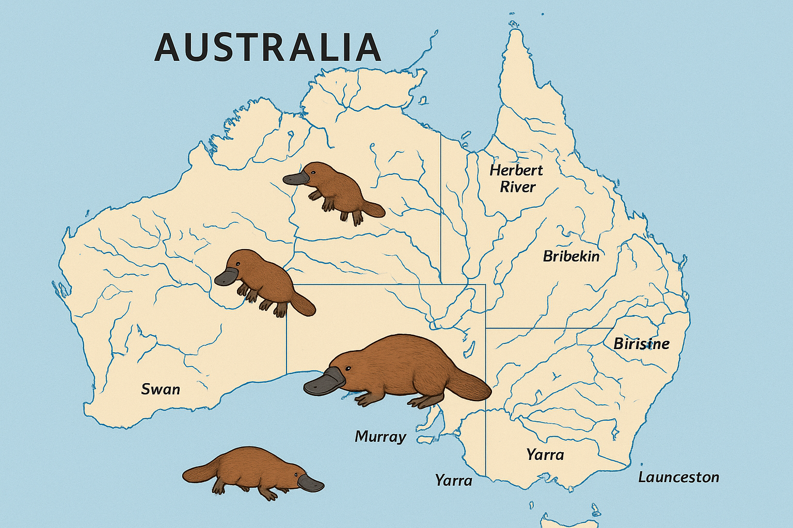
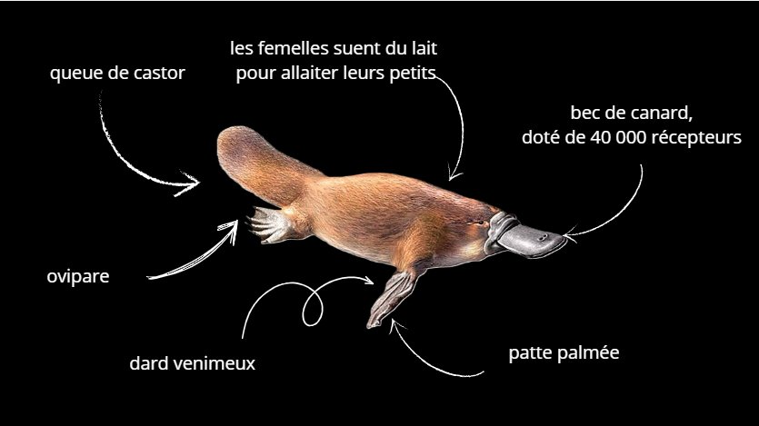
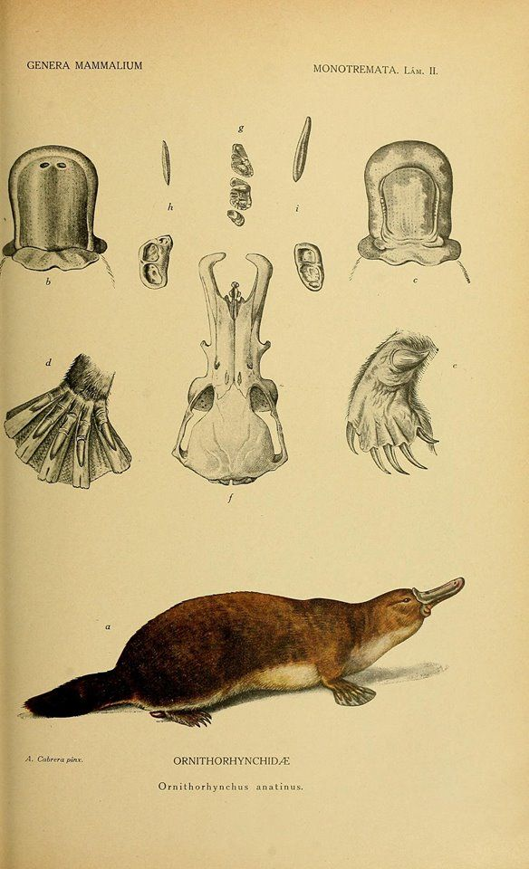
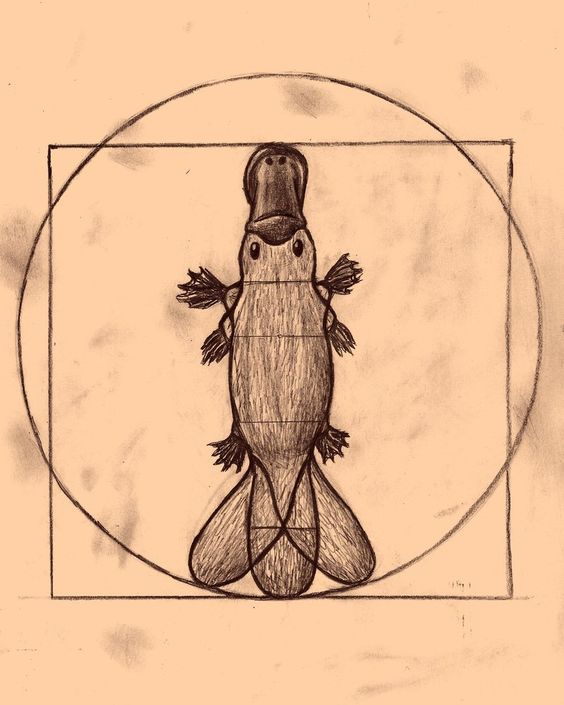
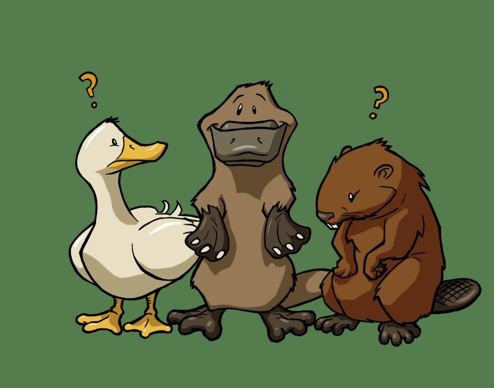
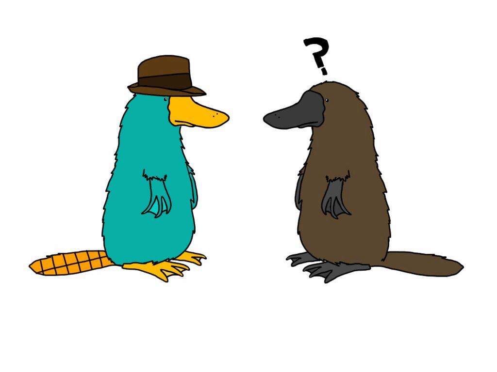
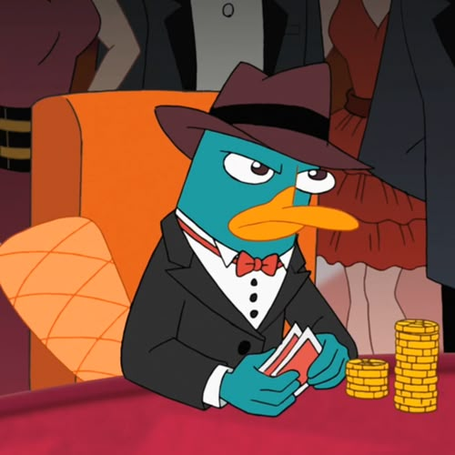

Ornithorhynchus anatinus

Mammifère ovipare · Monotrème · Australie orientale
L'ornithorynque est un animal originaire d'Australie. l vit principalement près des rivières, des lacs et des zones humides, où il passe une grande partie de son temps dans l’eau à chercher sa nourriture. C’est un animal semi-aquatique, actif surtout la nuit.
Son nom provient du grec « Ornithorhynchus », ὄρνις (órnis) qui signifie l'oiseau et ῥύγχος (rhýnchos) qui veut dire bec ou groin.
Il possède un bec semblable à celui d'un canard, une queue proche de celle du castor et des pattes palmées adaptées à la nage. Son bec est muni d'une multitude de récepteurs électrorécepteurs le rendant très sensibles et lui permet de détecter ses proies dans l’eau.
Contrairement aux autres mammifères, il pond des œufs tout en allaitant ses petits. De plus, le mâle possède un dard venimeux, ce qui est extrêmement rare chez les mammifères.
Cette combinaison de caractéristiques fait de lui une espèce hybride, difficile à classer, et donc particulièrement fascinante pour les scientifiques.


Lorsque l'ornithorynque est découvert en 1799, les scientifiques européens sont très surpris. Ils pensent d'abord qu'il s'agit d'un faux animal, voire d'une blague. Cette réaction montre à quel point son apparence ne correspond à aucune catégorie connue. En effet, son corps semble être un mélange de plusieurs animaux différents, ce qui intrigue et déstabilise les chercheurs.
« Il n'est ni reptile, ni oiseau, ni mammifère classique — ce qui remet en cause les critères traditionnels et en fait un symbole de mystère scientifique. »
L'ornithorynque appartient à la famille des monotrèmes, un groupe très ancien de mammifères. Son allaitement est particulier, car le lait est sécrété directement par la peau, et les mâles possèdent un dard venimeux. Ce mélange de caractéristiques rares en fait un animal unique dans le règne animal.
Peu à peu, les chercheurs comprennent qu'il s'agit d'une espèce réelle, mais sa classification reste difficile : il pond des œufs comme un reptile ou un oiseau, tout en allaitant ses petits comme un mammifère. Cette particularité montre que l’évolution des espèces est plus complexe qu’on ne le pensait.

| Règne | Animalia |
| Classe | Mammalia |
| Ordre | Monotremata |
| Espèce | O. anatinus |
Au Moyen Âge, les Européens ne connaissaient pas l'ornithorynque, car il vit uniquement en Australie, un continent encore inconnu à cette époque.
Cependant, les hommes du Moyen Âge imaginaient de nombreux animaux hybrides dans les bestiaires et les récits religieux. On y trouvait par exemple le griffon (mélange d'aigle et de lion) ou la chimère, qui combinaient plusieurs animaux en un seul être.
Si l'ornithorynque avait été connu au Moyen Âge, il aurait sans doute été perçu comme un animal mystérieux et extraordinaire. En raison de son apparence inhabituelle, les hommes de cette époque auraient pu le considérer comme une créature fantastique, semblable à celles décrites dans les bestiaires.
Ainsi, même s'il était inconnu, l'ornithorynque correspond parfaitement à l'imaginaire de cette période, où les animaux hybrides occupaient une place symbolique importante.


Dans la culture aborigène australienne, l'ornithorynque est souvent expliqué à travers des récits mythiques. Selon certaines légendes, il serait né de l'union entre un canard et un rat d'eau. Cette origine permet de comprendre son apparence unique, en le présentant comme un être issu de plusieurs espèces.

Dans la mythologie grecque, des créatures comme le Sphinx (corps de lion et tête humaine) ou la Chimère (lion, chèvre et serpent) combinent plusieurs animaux en un seul être. L'ornithorynque rappelle ces créatures — à la différence cruciale qu'il est bien réel.
Aujourd'hui, l'ornithorynque est perçu de manière beaucoup plus positive. Il est devenu un symbole de la biodiversité et de la richesse du monde animal. Cependant, il est classé comme quasi menacé, ce qui souligne l'importance de protéger son habitat.
Son image a profondément évolué : d'animal incompris et sujet de plaisanterie, il est devenu un symbole de fascination scientifique et de protection de la nature.
Ornithorhynchus anatinus · Australie
Perry · Agent P · Phineas et Ferb
D'abord perçu comme une anomalie ou une curiosité, il est aujourd'hui reconnu comme une espèce précieuse et fascinante. Son étude montre que les catégories scientifiques ne suffisent pas toujours à expliquer toute la diversité du vivant. De plus, selon les cultures, l'ornithorynque est perçu différemment, ce qui montre que le lien entre l'homme et l'animal est à la fois scientifique et culturel.
